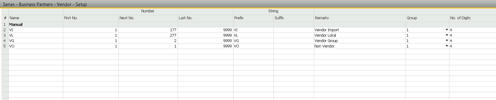
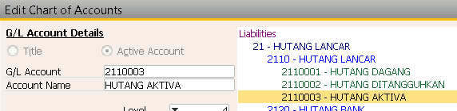

Pembelian Aktiva SAP
Keterangan :
Digunakan untuk pembelian ATK, ASET, Mesin dll
__Semua pembayaran untuk pembelian Asset harus menyertakan PO SAP__
Konfigurasi
[SAP B1]
- Buat Group Non Vendor Dengan kode VO

- Buat COA baru hutang non barang dagang

- Buat kelompok Item Baru dengan ketentuan
- Checklist inventory dimatikan
- Group Accounting lari ke biaya

Prosedur
- Bagian Procurement /purchasing membuat form purchase request
- Kemudian diserahkan ke bagian Accounting untuk dicek apakah aktiva atau biaya
- Kemudian bagian Accounting membuat Fixed Asset Master Data di SAP sesuai dengan Kriteria Asset yang ditentukan
graph TD
B(Procurement/Purchasing) --"Form Request" --> A{Asset?}
A --Y--> C(FixAsset Master data)
C ==Asset_Code==> B
- kemudian Kode Master Data tersebut diberikan ke bagian Procurement untuk dibuatkan PO
- Bagian Procurement / Purchasing membuat Purchase Order sesuai kode yang dibuat oleh bag Accounting
- Purchase Order tersebut diserahkan ke bagian Accounting untuk diproses pembayaran dan pengakuan assetnya
graph TD
B(Procurement/Purchasing) --"Purchase Order" --> A(Accounting)
A --Payment--> C(Pembayaran / jurnal Manual)
A --Pengakuan Asset--> D(AP Invoice)
Jurnal yang terbentuk :
[1] UM Aktiva
Hutang Aktiva
[2] Asset
UM Aktiva
Pembayaran dibayar dengan jurnal Manual :
[3] Titipan
Bank
- Setelah barang lengkap, bagian accounting membuat AP Invoice copy from PO Asset tersebut
graph TD
B(AP Invoice) --> A(Outgoing Payment)
Pembayaran dibayar dengan Outgoing Payment :
[4] Hutang Aktiva
Titipan